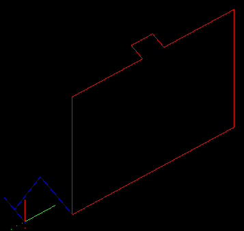
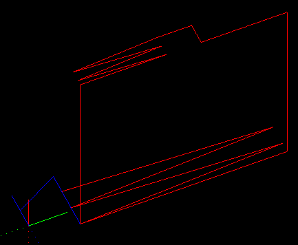
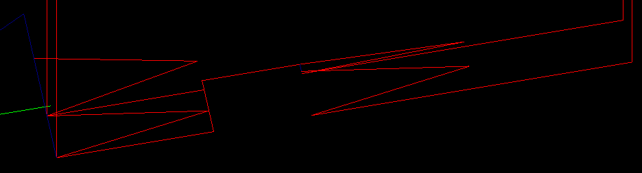
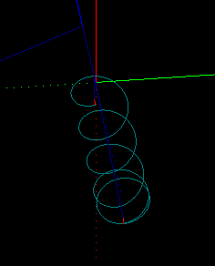
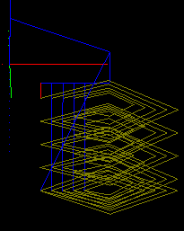

May 2015
HOWTO use Ramping
|
From this  |
To this!  |
and now in V1.5: To This!
|
With the advent of stronger home CNC routers (and mills)
like the Shapeoko and OX, comes the desire to cut harder
materials like G10 and aluminum.
The right way to enter cuts in such materials is to ramp
in at an angle until the cutter reaches the correct depth.
With this release (1.3, May 2015) SketchUcam brings you
simple ramping options that increase your work envelope
in harder materials.
Of course, the previous option of plunging directly into
the work is still available.
Summary
- Plunges are replaced with ramps.
- Arcs and lines can be ramped.
- Plunge feed rate is used for ramps.
- Plunge bores use the ramp angle for the helix.
- Segments less than BitRadius long will not be ramped.
- On lines longer than 5 x bitdiameter the ramp length will be limited to 5 x bitdiameter. (new in V1.5)
Basics
With ramping turned on, any point that would have been a plunge becomes a ramp along the first segment of the cut, and also after tabs, as you can see in the image at above right. The cut begins at the closest corner to the origin and ramps along the first segment, taking two passes to get to full depth. In this case the ramp angle limit is 5 degrees.
If the first segment of a cut is very short, less than BitDiam/2, the cut will be converted to a vertical plunge.
A comment will be inserted in the code saying
(ramplimit end, translated to plunge)
Again we emphasize the need to preview the G-code before cutting, especially if the bit has limited plunge capability
(in which case a possible solution is to do a drawing with plunge holes at all start points and use an actual drill bit to
pre-drill all those holes).

When placing arcs it might be better to use 8 or 12 segments instead of the default 24, this makes each segment longer giving it a decent chance to ramp.
The 'plunge rate' feed speed is used for all ramp movements.
This can be the same as the Feed speed, or less, depending on the capabilities of your tool bit and machine strength.
There are two modes of operation, with and without ramp angle limiting.
- With the ramp angle set to 0 degrees, the angle is not limited. This means that depth will always be reached in a single zigzag. For a short segment the 'ramp' could be almost vertical so it is important to study the G-code in a previewer before cutting to ensure that the angles are sensible. However, ramping on arcs will be limited to 45 degrees even when limit is set to 0.
- With the ramp angle limit set from 1 to 45 degrees the actual cut angle is always less than or equal to the given angle. As many ramp movements as are needed to get to depth at the angle given will be generated. The number of ramps must always be an even number so the count is rounded up, thus reducing the angle slightly in many cases.
 The ramp options are set on the parameters dialog, a segment of which is shown at right.
Tick 'Ramp in Z' to turn ramping on.
The ramp options are set on the parameters dialog, a segment of which is shown at right.
Tick 'Ramp in Z' to turn ramping on.
Set the 'Ramp angle limit' to 0 for no limit, or to a value from 1 to 45 degrees for a limited angle.
Note that small angle limits may significantly increase your cut time.
Shortening long ramps:

The old technique below is no longer needed since all ramps are now limited to 5 x bitdiameter in length if the segment is longer than that figure.
If the first segment of a cut is a very long straight line the ramp will be very long. You can shorten it by placing a tab a suitable distance along that line, and then use the PB erase tool to remove the tab. The cut line will remain 'broken' at that point and the ramp will only go up to the break, as illustrated at right. In that drawing is an outside cut around a 100x30mm rectangle, the long cuts are just over 100mm, and the ramp is about 20mm long to a depth of 10mm.
It will ramp down after tabs, with the added optimization of plunging down to almost (less a few thou) the previous pass depth before starting the new ramp.Multipass ramps:
Multipass ramping has been optimized by allowing the tool to rapid down to the previous pass level after tabs, before beginning the new ramp. The rapid will stop 0.25mm above the previous pass depth. If the multipass depth is less than 0.25mm then passdepth/2 is used as the hold off height.
In the image at above you can see that the first pass is deeper than the tab so it ramps from the top of the tab down to the pass depth.
On the second pass it rapids (the vertical blue line) down to pass height less 0.25 before starting the ramp down to final depth.
V-tabs:
If you use a 'normal' V-tab the angles may be much higher than the limit angle for your toolbit. To make it easy to find a V-tab width that preserves the ramp angle limit, a tool has been added to the Tools|Phlatboyz menu. To use it:
- On the Parameters dialog, set your tab depth, shallow tabs are recommended otherwise the tabs can be very long, start at 75% depth (which leaves 25% of material thickness behind).
- Set the ramp angle limit
- Close the Parameters dialog
- Pick 'Set Ramp Vtabs' on the Tools|Phlatboyz menu.
- Open the Parameters dialog and you will see that the tab width and depth have been changed.
These values will preserve the selected ramp angle through V-tabs, and also preserve the actual V-tab height. (V-tabs usually come out a little thinner than the set value, due to the geometry of the bit traversing the peak of the V, smaller bits will remove less than larger bits.)
It is best to use normal tabs on arcs, Vtabs can easily be too short to maintain the limited ramp angle. Might not matter on plywood, but will matter on aluminum and on angle limited cutter types.
Ramping and plunge holes
 The helix angle used for boring holes will be limited to the ramp angle if it is set > 0.
If not set the normal scheme is used, ie each helix depth will be limited to multipassdepth or to BitDiam/2 if multipass is off.
Limiting the helix angle means that the number of cuts will vary with diameter, requiring more cuts for the inside of a hole
than for the final diameter cuts. This is particularly noticeable at low ramp limit angles.
The helix angle used for boring holes will be limited to the ramp angle if it is set > 0.
If not set the normal scheme is used, ie each helix depth will be limited to multipassdepth or to BitDiam/2 if multipass is off.
Limiting the helix angle means that the number of cuts will vary with diameter, requiring more cuts for the inside of a hole
than for the final diameter cuts. This is particularly noticeable at low ramp limit angles.
When ramping is on the plunge hole routine will try hard to not plunge directly into the work.
Obviously, if the plunge hole is the same diameter as the toolbit, it will have to plunge.
In this case it may be better to do a seperate drawing with just these holes on it, and generate G-code with either:
Multipass set to a much smaller multipass depth than would be used for the normal cuts
or
normal multipass depth, but use a real drill bit for the cuts, and run this file before the normal cut file (see G-code joiner).
For holes with diameter larger than the toolbit, plunging the center hole will be avoided as follows:
-
For holes less than 2xBitDiam it will use the setting of the 'Stepover%' to decide whether or not to do an initial bore of the center before is does the finishing pass.
- Stepover% < 50%

- do an initial helical bore of 70% of final hole size, use this for hard materials (metals)
- Stepover% >= 50% 
- skip the initial bore and just do the finished hole size pass, you might use this for not so hard materials like G10
Ramp limit 5 degrees.
Bit diameter 5mm.
Hole size 19mm.
Stepover 25%For holes greater than 2x BitDiam it will always helical bore an initial hole with offset of BitDiam/2. This bores a hole 2 x BitDiam and clears the center without plunging.
Keep in mind that the Stepover% will also be used to set the stepover of the bit for each helical pass.
- Stepover% < 50%
In summary then:
- With depth first option selected 'Tools|Phlatboyz|Options|Hole Feature Options'
dia = tooldia tooldiam < dia <= 2D dia > 2D Stepover% < 50% Will Plunge no plunge, 2 helical bores no plunge, 2 or more helical bores stepover% > 50% Will Plunge no plunge, single helical bore no plunge, 2 or more helical bores
- With diameter first option selected 'Tools|Phlatboyz|Options|Hole Feature Options'
dia = tooldia tooldiam < dia <= 2D dia > 2D stepover% < 50% Will Plunge no plunge, 2 helical bores no plunge, 1 helical bore, then spiral out to diam stepover% > 50% Will Plunge no plunge, single helical bore no plunge, 1 helical bore, then spiral out to diam
If you are making holes equal to the bit diameter in hard materials then you should use a real drill bit and do a seperate drilling cycle with either full retract or quickpeck (partial retract) selected.